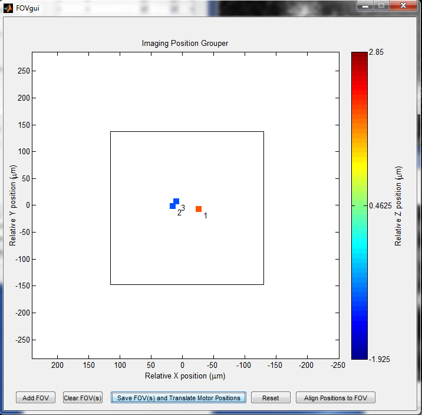

Imaging Multiple Positions
Follow this step-by-step tutorial to image and uncage multiple positions over a period of time. Autofocus and automatic drift correction will be used.
Note: the use of Autofocus requires imaging of multiple Z positions. If you image at least 3 Z slices every time, this is sufficient for continuous Autofocus ("Use Acquired for Autofocus"). If you prefer, you can take multiple slices of only one position, and have the program autofocus and drift-correct everything relative to that one position. This method will be described below.
- First, set the Focus and Drift Correction parameters. Turn on the Autofocus, Multiple Positions (the circle in Imaging Mode), Continuous Drift Correction, Use Max Projection, Scan Shift, and Display AF images in the Focus and Drift Correct panel of the DIA window:
- The Z range and step count shown in your autofocus parameters will be used when navigating to a position for the first time or when aligning FOV positions, so it should be set to a relatively wide range.
- In the "Select Ref Channel" dropdown menu, select the channel that you will use to collect your data. If you use Channel 1 to find your data and FLIM to collect it, set the reference channel to FLIM and make sure to turn on FLIM whenever a reference image is collected.
- Select the Multiple Positions tab on top. Make sure FOV Mode ON is unchecked. Auto Add Ref Img should be selected, meaning a reference image will be collected as soon as you define an uncaging ROI/motor position.
- Set the Imaging Zoom to the zoom value you will use while collecting data. Set your desired Slice # and Step/Slice in the Motor Controls window.
- Using the stage motor, find a position to image/uncage. When you've found a position, make sure your zoom is the same as the 'Imaging Zoom' set in DIA. If you will be imaging in FLIM, turn on FLIM here since the Reference Image should be collected from the FLIM channel. Click on "Define Uncaging ROI", and drag a ROI as you normally would when selecting an uncaging position in your Acquisition Channel. This action will save both your ROI and stage position, adding it to the table on the right. Repeat this for other positions, but make sure they are all in the same field of view (FOV), meaning that if you zoom all the way out (zoom=1), you can visualize them all (ignoring changes in Z). Since imaging power tends to suffer as you move away from the center of your FOV, it is ideal to have your imaging positions clustered as close together as possible.
- If you will be uncaging, navigate to the top of the slice and hit "Set" under the Z Roof absolute (for dwell). This sets the Z roof, automatically calculating a different dwell value for each position while uncaging. Setting the Z roof can be done globally (for all positions) or locally (for each individual position) and is represented as Z depth.
- Click "Setup Timeline". Set each imaging/uncaging step in the top left corner. Make sure all settings are correct before adding each step, and check your settings in the list to the right.
- Play with the settings in this window until everything makes sense to you.
- 'Uncaging' does not require duration or period and is automatically set to 'exclusive'
- Exclusive steps will only allow imaging at a single location
- The max number of positions imaged is set in the window above. Once a single position is finished, the next one will be located.
- The timeline is saved along with your other DIA options, so after setting it up, click the save button in the DIA window.
- Estimated uncaging duration does not change anything except for how your timeline looks.
- Stagger time is important to make sure important parts of your imaging cycle do not overlap. play with this feature.
- To view your reference images, click on "Ref Images". This will bring up a window where you can look at the images and the relative positions of the ROI. If you wish, you can update your reference images here later.
- Keep the first two options selected. Click on "Threshold Cell Perimeter" to find a threshold value which will accurately estimate the perimeter of your cell. If "Correct ROIs before uncaging" is selected, the ROI will be placed on the closest point of this perimeter immediately before uncaging. This only needs to be done once, as the same perimeter calculation should work for all your positions.
- In the DIA window, select "FOV mode ON". From this point on, DO NOT MANUALLY MOVE YOUR XY MOTOR - ONLY Z. Click on Group by FOV.
- The labeled squares represent your saved positions in relative space. Click on Add FOV. The large red square shows your entire FOV. Drag it to include all your imaging positions and have them as close to the center as possible. Click "Save FOV(s) and Translate Motor Positions. The FOV square will turn black. From now on, all your positions will have the same XY motor coordinates (the coordinates of the FOV), but each position will have its own Scan Shift coordinates. Essentially, the microscope will move the laser to these positions without actually moving the XY motor. The Z motor value for each position will still be different.

- Now, you need to accurately align these newly translated positions to their reference images. This can be done automatically by click "align Positions to FOV".
- Close the FOVgui window. To manually align your positions, click again on the Ref Images >> button. Click on a position to see its reference image. Now, in the DIA window, select the same position and click "ScanShift GoTo". This position should have the same image as its reference image, but you cannot correct it using the XY motor. Start your FOCUS imaging. Using the Z motor and Scan Shift control (in the Main Controls window), match the acquired image to that see in the Ref Images window. The 4 arrows move the image by a set step size, while the CT button centers the image on a certain point (has to be used when FOCUS is off) Note - CT causes crashing on some systems. Experiment with these techniques to figure out a fast way to move around.

- Once all your images are aligned, save your ROIs by clicking "Save ROIs". You can also save your general settings by clicking the save icon in the toolbar.
- You can time a round of imaging by clicking "Grab and Time FOV1". This will run 1 round of imaging, and inform you of how long everything takes in matlab's command window.
- Click on Specimen Info and fill in any information which you wish to be saved with your imaging session. this info will be saved to a text file once imaging starts.
- If you wish to use page controls mode, select Page acq in DIA. this will turn on pageControls right before uncaging.
- Check all your options once again and click Start. Whenever Autofocus runs, a window will pop up showing the images used for autofocus, the ROI which the autofocus routine used (red square), and the best-focused position (Green Square). The Z value reflects the absolute motor Z position. Once 'START' is hit, timeline parameters can't be changed.
- Images are organized into different folders based on their position. Once imaging is done, spc images are copied into a folder called "renumbered" to assist in future analysis.
Created with the Personal Edition of HelpNDoc: Free EPub producer